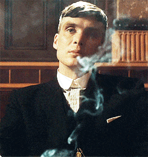

Peaky Blinders
Los Peaky Blinders fueron una pandilla criminal de Birmingham, Inglaterra, durante el periodo de la Primera Guerra Mundial. Los miembros de esta pandilla llevaban un atuendo característico: chaquetas a medida, abrigos con solapa, chalecos con botones, pañuelos de seda, pantalones de campana, botas de cuero y gorras planas con visera. Fue una de muchas pandillas juveniles urbanas en aquella época.